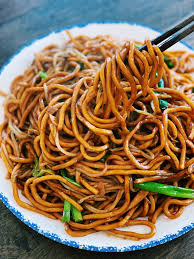

Noodle Stirfry

Delicious Asian Noodle Stirfry
If you're craving chinese takeout but want to make a healthier version at home, this recipe is for you. Some
pantry staples,
along with a few extra ingredients, make this recipe cheap, easy, and tasty.
Ingredients
- Spaghetti noodles
- 5 broccoli florets
- 2 Eggs
- 1 teaspoon garlic
- 1 teaspoon ginger
- 1 teaspoon chili flakes
- 1/2 tablespoon olive oil
- 1/2 tablespoon sesame oil
- 1/4 cup soy sauce
- 1 tablespoon sugar
- 1 tablespoon oyster sauce
Optional
- 1 tablespoon sweet chili sauce
Steps
- Start boiling a serving of spaghetti noodles in a medium pot following the box instructions.
- Add your olive oil and sesame oil to a pan. Turn to medium-high heat.
- Add chili flakes, garlic, and ginger to the pan and cook until fragrant.
- Tear apart your broccoli florets into bite size pieces, and add to the pan. Turn to medium heat and stir occasionally.
- Next, mix soy sauce, sugar, oyster sauce, and the optionl sweet chili in a bowl.
- While the broccoli is cooking, crack 2 eggs into a bowl and whisk until scrambled.
- Once broccoli is cooked to your liking, add the egg.
- Now, add your sauce mixture and stir making sure to incorporate it into all the broccoli and egg.
- By this point your noodles should be done, and you can add them to the pan.
- Mix everything well. Let the noodles stirfry in the pan to soak up all of the flavors.
- Finally, plate up your meal and enjoy!
Back